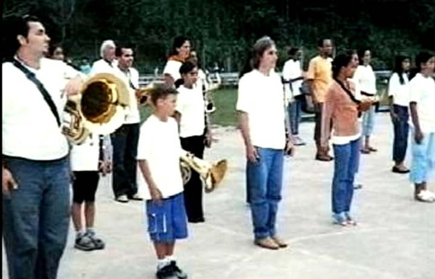
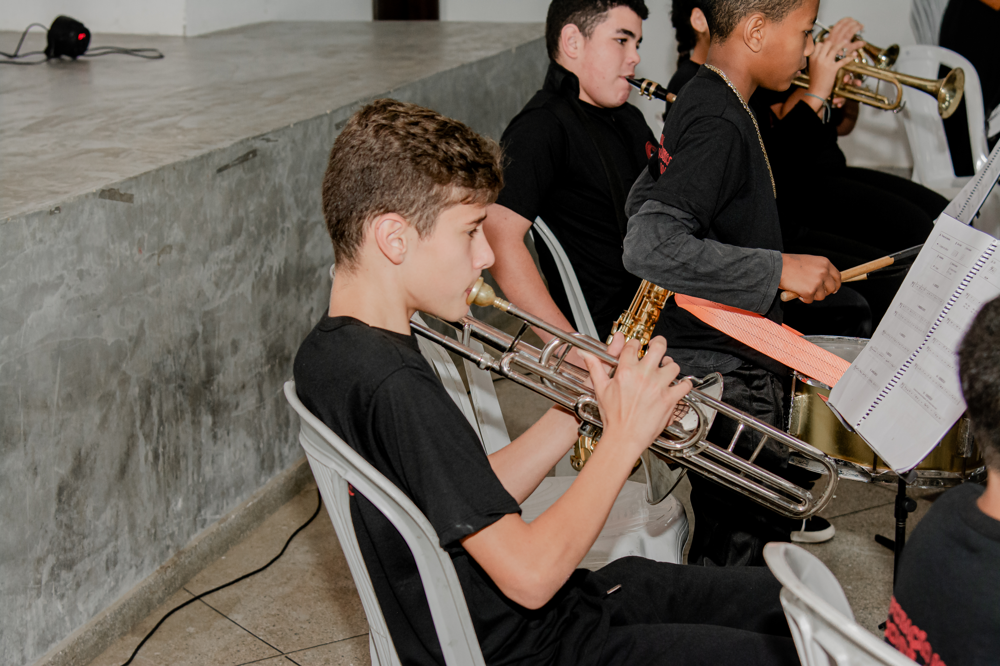
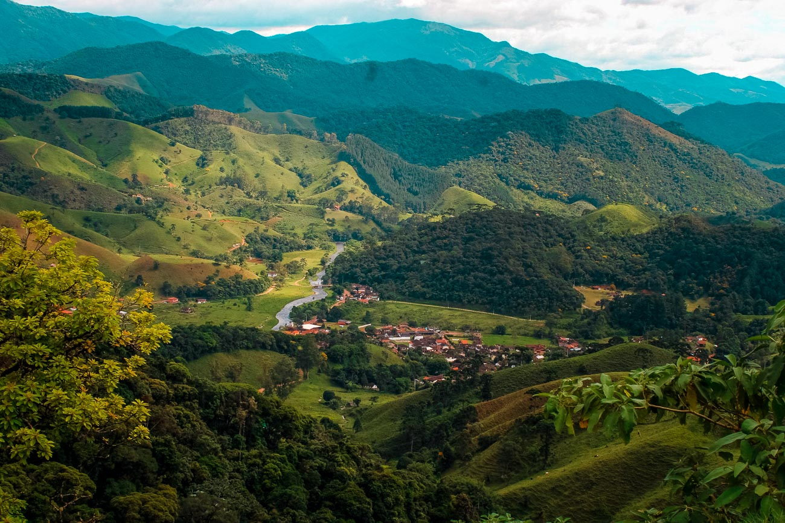
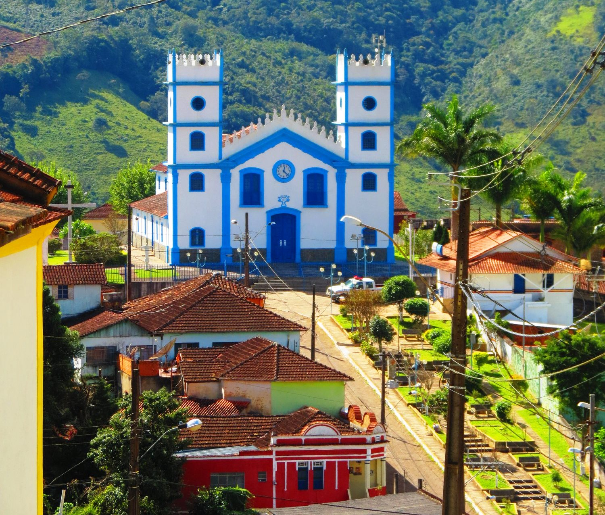
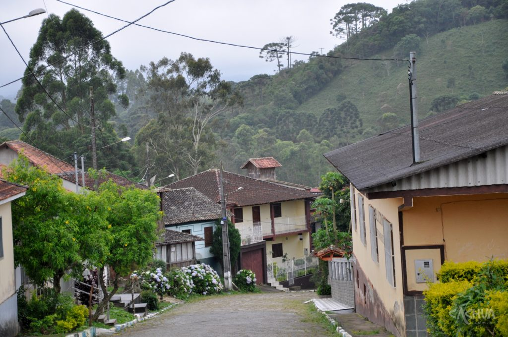
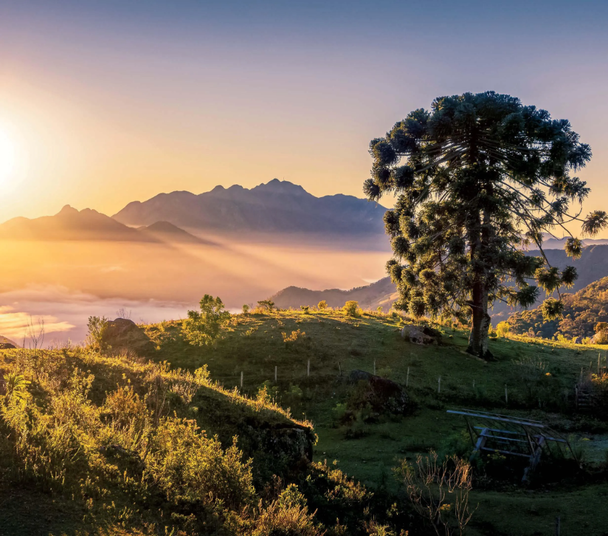
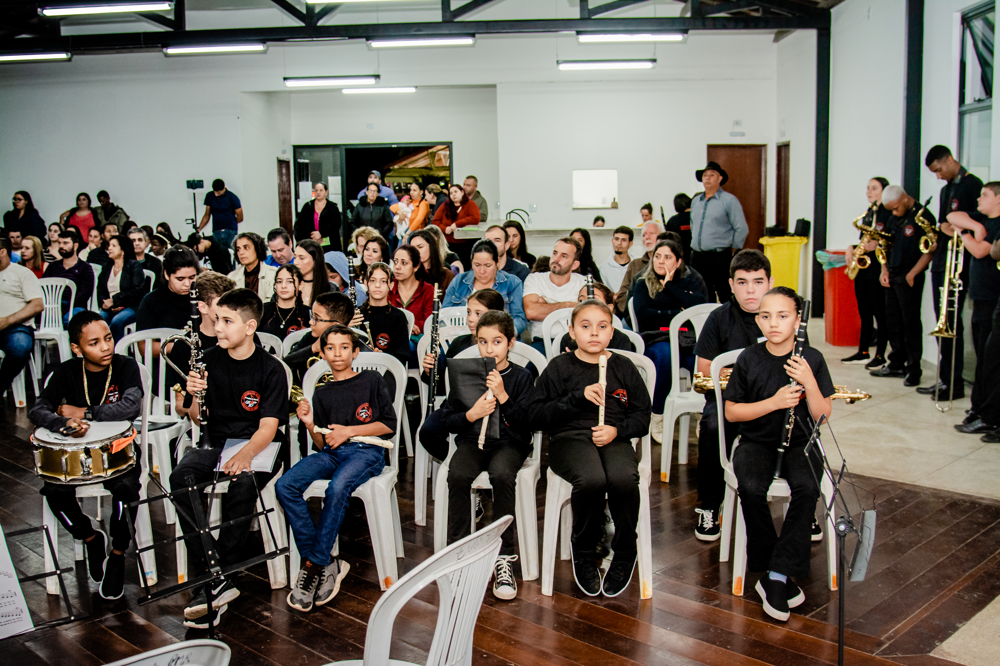
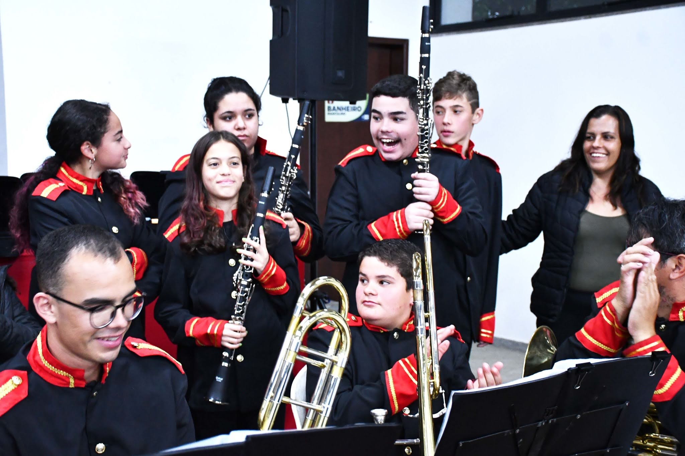

Desde 2003, a Corporação Musical Visconde de Mauá utiliza a música como caminho para a formação, a convivência, a cultura e o desenvolvimento das comunidades da Serra da Mantiqueira.
Mais do que uma banda, a Corporação é um projeto social, cultural e educacional que proporciona a crianças, jovens e adultos o acesso gratuito à formação musical, ao aprendizado coletivo e à experiência de fazer parte de um grupo musical.
A história da Corporação Musical Visconde de Mauá começou em 2003, em Visconde de Mauá, por iniciativa de Ruan Clinton Llerena.
Desde o início, a proposta foi criar um espaço de acesso à música e de formação de novos músicos, aproximando crianças, jovens e adultos dos instrumentos musicais e da tradição das bandas.
Durante seus primeiros anos, o projeto foi administrado pela ONG Pró-Bem Viver, que esteve à frente da Corporação entre 2003 e 2019.
Ao longo desse período, a banda construiu sua trajetória junto à comunidade, participando de apresentações, eventos e atividades culturais e formando diferentes gerações de músicos.

Em 2019, teve início uma nova etapa da história da Corporação com a criação da Associação Parceiros Nota 10, organização responsável pela gestão do projeto.
A Associação Parceiros Nota 10 foi fundada em 2019 e regulamentada em 2020 como uma organização da sociedade civil, voluntária e sem fins lucrativos.
A partir dessa nova estrutura, a Corporação passou a ampliar e organizar suas ações, fortalecendo a formação musical, a realização de atividades culturais e a busca por parcerias e projetos que permitissem levar o ensino de música a mais pessoas.
A continuidade desse trabalho mantém vivo um projeto que, desde 2003, vem atravessando gerações por meio da música.
A Corporação Musical Visconde de Mauá - COMVIMA - é um projeto social, cultural e educacional, voluntário e sem fins lucrativos, voltando à formação musical e à valorização da cultura das bandas tradicionais.
As atividades são oferecidas de forma gratuita, buscando garantir que crianças, jovens e adultos possam ter acesso à música idependentemente de sua condição socioeconômica.
A Corporação também atua na preservação e difusã da tradição das bandas bandas de música, reconhecendo seu papel na história, na cultura e na vida comunitária das cidades e localidades da região.

Para a COMVIMA, aprender música vai muito além de aprender a tocar um instrumento.
As aulas, ensaios e apresentações criam oportunidades de convivência, aprendizado e participação. No ptocesso de formação, os alunos desenvolvem conhecimentos musicais e também vivenciam valores como disciplina, responsabilidade, cooperação, respeito e cidadania.
Cada novo aluno representa a possibilidade de uma nova história começar.
Oferece aulas de musicalização, teoria, prática instrumental e formação para a participação em conjuntos e bandas de música.
Os alunos têm a oportunidade de colocar em prática o que aprendem em ensaios coletivos, oficinas e atividades de conjunto, avançando grandualmente em sua formação musical.
A Corporação contribui para a preservação, valorização e difusão da tradição das bandas de música, mantendo viva uma manifestação cultural que faz parte da história de diversas comunidades brasileiras.
A banda participa de eventos culturais, encontros de bandas, festivais, celebrações e atividades comunitárias, levando a música para diferentes públicos e porporcionando aos alunos experiências reais de apresentação.
A atuação da Corporação está ligada à região da Serra da Mantiqueira, conectando comunidades de diferentes municípios e localidades.

É o território de origem da Corporação e onde está concentrada parte importante de suas atividades de formação, ensaios e apresentações.

A atuação em Bocaina de Minas foi iniciada em 2014 e vem sendo ampliada por meio de ações de formação musical e desenvolvimento de novos músicos.

O trabalho também alcança Santo Antônio do Rio Grande, ampliando o acesso à formação musical e fortalecendo a criação de uma nova base de músicos na região.

Ao longo de sua trajetória, a Corporação também desenvolveu ações e atividades em outras localidades da região, aproximando a música das comunidades e construindo uma rede de pessoas, famílias, músicos, professores, voluntários.

Ao longo de mais de duas décadas, a Corporação Musical Visconde de Mauá acompanhou diferentes gerações.
Alunos que chegaram pela primeira vez para conhecer um instrumento passaram a integrar ensaios, apresentações e atividades da banda. Alguns seguiram caminhos próprios na música; outros permaneceram ligados à cultura e à comunidade.
Essa continuidade é parte fundamental da identidade da Corporação.
A cada geração, novos alunos chegam, novos músicos se formam e a tradição continua.
Promover o acesso gratuito à ediucação musical, contribuir para o desenvolvimento humano e cultural das comunidades e preservar a tradição das bandas de música como parte do patrimônio cultural da região.

Desde 2003, a Corporação Musical Visconde de Mauá segue construindo sua história através de pessoas.
Alunos, músicos, professores, maestros, famílias, voluntários, apoiadores e parceiros fazem parte dessa trajetória.
Porque uma banda não é formada apenas por instrumentos.
É formada por pessoas que aprendem, ensinam, escutam, caminham juntas e fazem a música continuar.